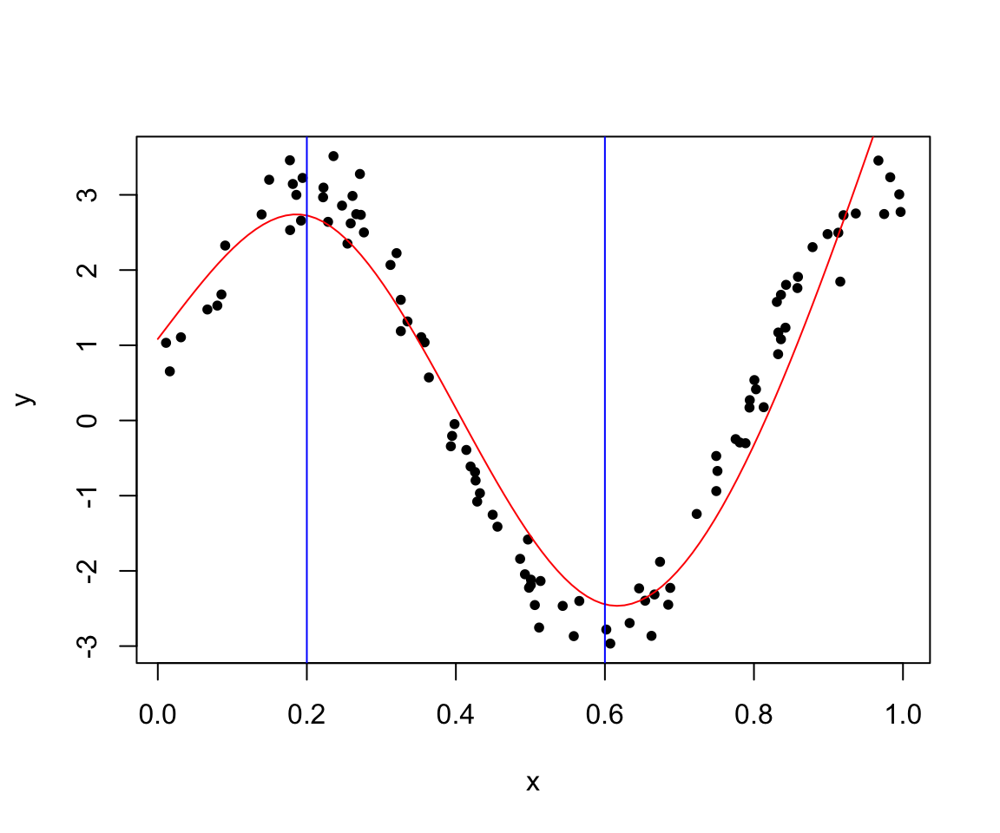
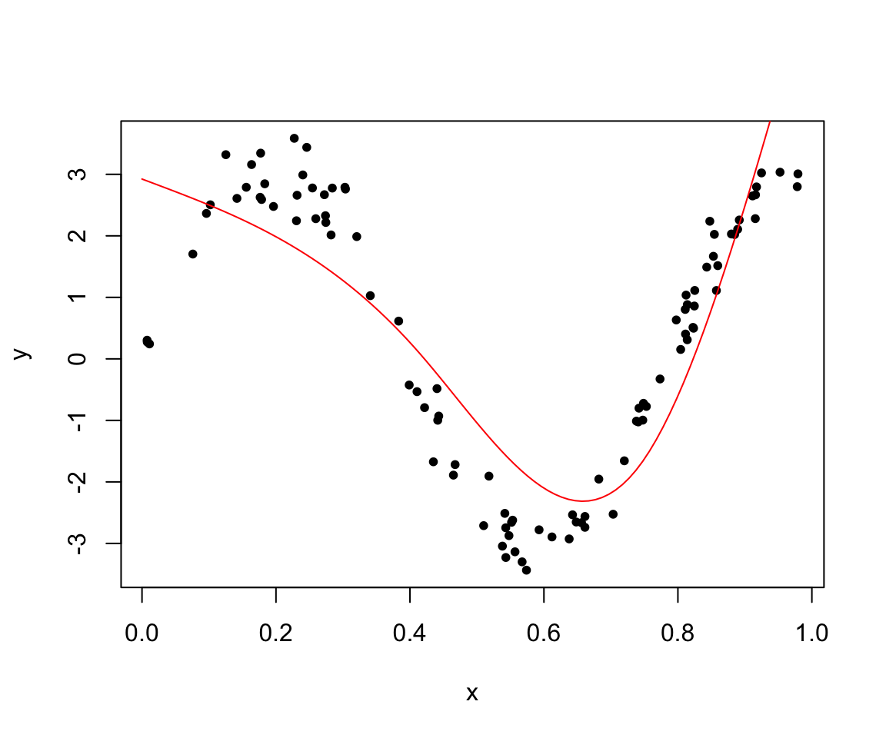
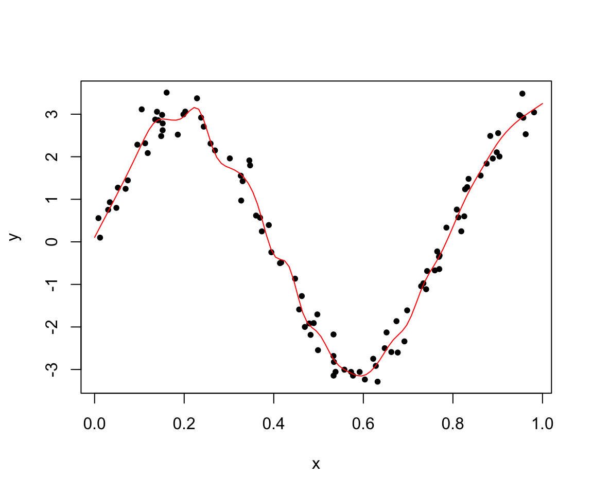
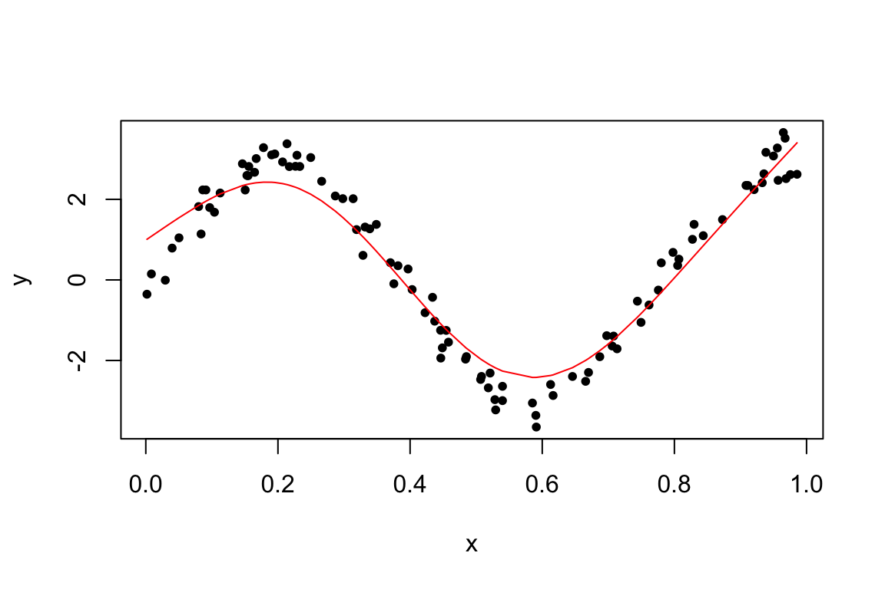
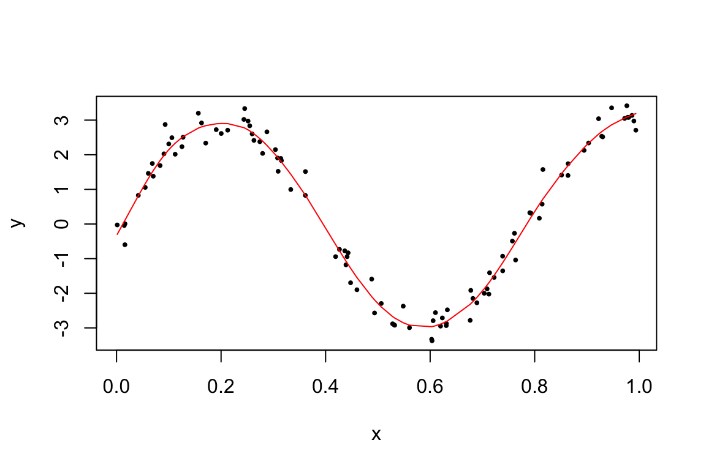

library(knitr)
library(splines)
library(ggplot2)
library(lattice)9 스플라인 회귀모형
9.1 함수의 기저
반응변수 \(Y\)와 설명변수 \(X\)가 다음과 같은 관계를 가진다고 하자.
\[ E(Y|X=x) = m(x) \]
이러한 관계를 회귀모형(regression model)이라고 하며 \(Y\)의 평균이 \(X\)에 따라서 변하는 괸계를 설정하는 모형이다. 만약 \(m(x)\)의 형태를 회귀계수의 선형식으로 나타낼 수 있다면 우리는 이를 선형회귀모형(linear regression model)이라고 한다.
\[ m(x) = a+b_1 x_1 + b_2 x_2 + \dots + b_p x_p \]
설명변수는 고정된 값이거나 또는 확률변수일 수도 있다.
비모수 회귀모형(nonparametric regression model)에서는 \(m(x)\)의 형태에 특별한 제한을 두지 않는다. 따라서 함수 \(m(x)\)는 무수히 많고 다양한 형태를 가질 수 있다.
이제 설명변수의 수가 1개라고 가정하면 함수 \(m(x)\)를 가장 단순하게 표현할 수 있는 모형이 1차 회귀모형이다.
\[ y = a + b x + e \]
만약 반응변수와 설명변수의 관계가 선형이 아니라 비선형이라면 \(m(x)\)를 \(p\)-차 다항식으로 사용할 수 있다.
\[ m(x) = a + b_1 x + b_2 x^2 + \dots + b_p x^p \tag{9.1}\]
이렇게 \(m(x)\)를 다항식으로 표현하는 것은 우리가 알 수 없는 함수를 \(p+1\)개의 기저들(basis), 즉 \(1\), \(x\), \(x^2\), ..,\(x^p\)의 선형조합으로 근사하는 것이며 다항식의 경우는 각 기저 \(N_k(x)\) 는 설명변수의 \(k\)-차 항 \(x^k\)이다.
\[ \beta_0 N_0(x) + \beta_1 N_1(x) + \beta_2 N_2(x) + \dots + \beta_p N_p(x) \tag{9.2}\]
일반적으로 임의의 함수는 다양한 형태의 기저들로 표현할 수 있으며 기저들의 형태에 따라 다음과 같은 것들이 있다.
- 다항식(polynimials)
- 퓨리에 함수(Fourier series)
- 웨이블릿 함수(Wavelet series )
9.2 직선 스플라인(Linear Spline)
이제 \(n\)개의 자료 \((y_1,x_1),(y_2,x_2),\dots,(y_n,x_n)\)이 주어졌다고 하자. 편의상 설명변수 \(x\)가 구간 \((0,1)\)의 값이라고 가정한다. 설명변수들이 포함되는 구간 \((0, 1)\)를 \(K+1\)개의 구간 \(\{B_j =(\xi_{k-1}, \xi_k) | k=1,2,..,K+1 \}\) 으로 나누어 보자. 즉
\[ \xi_0 = 0 < \xi_1 < \xi_2 < \dots < \xi_{K-1} < \xi_K < 1 = \xi_{K+1} \]
위의 구간에서 \(K\)개의 내부점들 \(\xi_1 < \xi_2 < \dots < \xi_{K-1} < \xi_K\)은 일반적으로 knots(연결점)이라고 부른다,
이제 반응변수들의 평균 \(E(Y|x)\) 을 단순하게 각 구간에서 상수라고 가정하면
\[ E(Y|x) = a_k \quad \text{ if } x \in B_k \]
각 구간에 속하는 반응변수들의 평균으로 추정할 수 있다. 이러한 추정법을 우리는 전 강의에서 Regressogram이라고 하였다.
\[ \hat E(Y|x) = \frac{1}{n_k} \sum_{i=1}^n y_i I_{B_k}(x_i) \quad \text{ if } x \in B_k \tag{9.3}\]

이제 Regeressogram의 개념을 확장시켜서 각 구간의 회귀모형을 직선식으로 확장하여 보자. 즉
\[ E(Y|x) = a_k + b_k x \quad \text{ if } x \in B_k \tag{9.4}\]
모형 식 9.4 는 각 구간마다 회귀직선을 적합하는 것과 같은 모형이다. 이러한 모형에서 추정된 각 회귀식들은 각 구간의 연결점 \(\xi_1, \xi_2, \dots, \xi_{K}\) 에서 불연속이다. 각 연결점 \(\xi_k\)에서 연속인 회귀식들을 구할 수 있을까?
이제 구간 \((0,1)\)을 다음과 같이 \(K+1=3\)개의 구간으로 나누어 보자. 이 경우 연결점은 \(\xi_1\)과 \(\xi_2\), 두 개가 있다.
\[ B_1 =(0, \xi_1) \quad B_2 = (\xi_1, \xi_2) \quad B_3 = (\xi_2,1) \]
모형 식 9.4 에서 주어진 회귀계수는 모두 \(2(K+1)=6\) 개이며 추정값을 구하는 방법은 다음과 같은 오차제곱합을 구하는 최소제곱법을 사용할 수 있다.
\[ SSE = \sum_{x_i \in B_1} (y_i - a_1 -b_1 x_i)^2 + \sum_{x_i \in B_2} (y_i - a_2 -b_2 x_i)^2 + \sum_{x_i \in B_3} (y_i - a_3 -b_3 x_i)^2 \tag{9.5}\]
이제 모형 식 9.4 에서 구한 직선회귀식이 연결점 \(\xi_1\)과 \(\xi_2\)에서 연속이 되려면 다음과 같은 두 조건을 만족해야 한다. \[ a_1 + b_1 \xi_1 = a_2 + b_2 \xi_1, \quad a_2 + b_2 \xi_2 = a_3 + b_3 \xi_2 \tag{9.6}\]
각 연결점의 연속을 만족하려면 위의 두 식을 만족해야 하므로 이제 추정해야 하는 모수의 개수는 4개이다. 왜냐하면 원래의 회귀계수의 개수 6 에서 제약식 2개의 개수를 제외해야 하기 떄문이다.
제약 식 9.6 을 다시 쓰면 다음과 같이 쓸수 있으며 \[ \begin{aligned} a_2 & = a_1 + (b_1 - b_2) \xi_1 \\ a_3 & = a_2 + (b_2 - b_3 ) \xi_2 \\ & = a_1 + (b_1 - b_2) \xi_1 + (b_2 - b_3 ) \xi_2 \end{aligned} \]
이 제약식을 이용하여 오차제곱합 식 9.5 에서 두 번째 항과 세 번째 항을 다음과 같이 전개할 수 있다
\[ \begin{aligned} \sum_{x_i \in B_2} (y_i - a_2 -b_2 x_i)^2 & = \sum_{x_i \in B_2} (y_i - a_1 - (b_1 - b_2) \xi_1 -b_2 x_i)^2 \\ & = \sum_{x_i \in B_2} [y_i - a_1 - b_1 \xi_1 -b_2 (x_i - \xi_1)]^2 \\ & =\sum_{x_i \in B_2} [y_i - a_1 - b_1 x_i -(b_2-b_1) (x_i - \xi_1)]^2 \\ \sum_{x_i \in B_3} (y_i - a_3 -b_3 x_i)^2 & = \sum_{x_i \in B_3} (y_i - a_1 - (b_1 - b_2) \xi_1 - (b_2 - b_3 ) \xi_2 -b_3 x_i)^2 \\ & =\sum_{x_i \in B_3} [y_i - a_1 - b_1 \xi_1 +b_2 \xi_1 - b_2 \xi_2 -b_3( x_i - \xi_2) ]^2 \\ & =\sum_{x_i \in B_3} [y_i - a_1 - b_1 x_i + b_1 x_i - b_1 \xi_1 +b_2 \xi_1 - b_2 \xi_2 -b_3( x_i - \xi_2) ]^2 \\ & =\sum_{x_i \in B_3} [y_i - a_1 - b_1 x_i + b_1 (x_i - \xi_1) +b_2 (\xi_1 -x_i + x_i) - b_2 \xi_2 -b_3( x_i - \xi_2) ]^2 \\ &= \sum_{x_i \in B_3} [y_i - a_1 - b_1 x_i - (b_2 -b_1) (x_i - \xi_1) -(b_3-b_2)( x_i - \xi_2) ]^2 \end{aligned} \]
위의 전개식에서 모수를 다음과 같이 다시 정의하면
\[ \beta_0 = a_1, \quad \beta_1 = b_1, \quad \beta_2 =b_2-b_2 , \quad \beta_3 = b_3 - b_2 \]
오차제곱합 SSE는 다음과 같이 전개할 수 있다.
\[ \begin{aligned} SSE & = \sum_{x_i \in B_1} (y_i -\beta_0 -\beta_1 x_i)^2 + \sum_{x_i \in B_2} [y_i - \beta_0 - \beta_1 x_i -\beta_3 (x_i - \xi_1)]^2 \\ \notag & \quad + \sum_{x_i \in B_3} [y_i - \beta_0 - \beta_1 x_i - \beta_2 (x_i - \xi_1) -\beta_3 ( x_i - \xi_2) ]^2 \end{aligned} \tag{9.7}\]
식 9.7 에서 얻은 오차제곱합은 다음과 같은 회귀모형을 적합한 경우에 얻을 수 있는 오차제곱합이다.
\[ E(y|x) = \beta_0 + \beta_1 x + \beta_2 (x-\xi_1)_{+} + \beta_3 (x-\xi_2)_{+} \tag{9.8}\]
위의 식에서 함수 \((x)_{+}\) 는 다음과 같이 정의된 함수이다. \[ (x)_{+} = \begin{cases} x & \text{ if } x \ge 0 \\ 0 & \text{ if } x < 0 \end{cases} \]
이제 연결점(knots)에서 연속인 조건을 만족하는 직선들을 추정하는 문제는 식 9.8 에 주어진 회귀식을 추정하는 문제와 같음을 보였다. 즉, 주어진 구간에서 서로 연결되는 최적의 직선식을 구하는 문제는 함수를 다음과 같은 기저로 조합된 것으로 보고 최적의 계수를 구하는 것과 동일한 문제이다.
\[ N_0(x) = 1, \quad N_1(x) =x, \quad N_2(x) = (x-\xi_1)_{+}, \quad N_3(x) =(x-\xi_2)_{+} \]
위의 기저의 특징은 일부 기저함수의 값이 주어진 구간의 전 \(\xi_1\)과 \(\xi_2\)에 의존한다는 것이다. 아래 그림은 연결점이 2개인 경우 4개의 기저를 나타내는 그림이다.
이제 위의 문제에서 만약 \(K+1\)개의 구간이 있다면 원래 회귀계수의 개수 \(2(K+1)\)에서 제약식의 수 \(K\)를 제외한 총 \(K+2\) 개의 기저가 필요하며 다음과 같다.
\[ N_0(x) = 1, \quad N_1(x) =x, \quad N_k(x) = (x-\xi_k)_{+}, k=1,2,\dots,K \]

9.3 스플라인 회귀
이제 주어진 구간에서 직선식이 아닌 \(p\)-차 다항식 식 9.1 을 고려하자. \(K+1\)개의 구간에서 \(p\)-차 다항식이 매유 부드럽게 연결되기 위한 조건은 연결점들에서 연속이며 더 나아가 \(1,2,..,p-1\)차의 미분값이 동일한 것이다. 이러한 조건을 만족하는 최적의 \(p\)-차 다항식을 구하는 문제는 다음과 같은 \(K+p+1\)개의 기저로 표현된 함수식에서 최적의 함수를 구하는 문제와 같다. 아래의 기저들을 절단된 다항함수(truncated power) 기저라고 부른다.
\[ \begin{aligned} N_j (x) & = x^j, \quad j=0,1,2,\dots, p \\ \notag N_{p+k} (x) & = (x-\xi_k)^p_{+}, \quad k=1,2,\dots, K \end{aligned} \tag{9.9}\]
위와 같은 스플라인 회귀에서 가장 자주 사용되는 것은 3차 스플라인 회귀(Cubic spline, \(p=3\))이다. 각 연결점에서 연속이고 1차와 2차 마분값이 같은 조건을 주고 각 구간에서 다항식을 구하는 것이다. 이때 구간의 하한과 상한, 즉 경계점(boundary)에서 직선의 성질을 가지는 조건, 즉 \[ m''(0)=m'''(0) =0, \quad m''(1) = m'''(1) =0 \tag{9.10}\]
을 만족하는 스플라인을 자연 스플라인(natural spline)이리고 부르며 가장 자주 사용된다.
예제로서 다음과 같은 모형에서 생성된 자료를 가지고 자연 스플라인을 적합해 보자.
\[ y_i = 3 \sin(8x_i) + e_i,\quad e_i \sim N(0,(0.3)^2) \]
다음은 100개의 자료를 가지고 2개의 연결점 \(\xi_1=0.2\)와 \(\xi_2 = 0.6\)을 이용한 3차 스플라인 함수를 적합하고 그리는 프로그램이다.
n = 100
x = runif(n)
x.grid = seq(0,1,length.out = 100)
y = 3*sin(8*x) + rnorm(n,0,.3)
fit = lm(y ~ ns(x,knots = c(0.2,0.6)) )
plot(x,y,pch=20)
pred = predict(fit,newdata=list(x=x.grid))
lines(x.grid, pred,col="red")
abline(v=c(0.2,0.6), col = 'blue')
다음 프로그램에서는 연결점을 자동으로 선택하고 차수를 3차(자유도=3)로 사용하는 방법이다.
x = runif(n)
y = 3*sin(8*x) + rnorm(n,0,.3)
fit = lm(y ~ ns(x,df=3) )
summary(fit)
Call:
lm(formula = y ~ ns(x, df = 3))
Residuals:
Min 1Q Median 3Q Max
-1.56759 -0.52665 -0.04589 0.66292 1.50074
Coefficients:
Estimate Std. Error t value Pr(>|t|)
(Intercept) 1.1173 0.2576 4.337 3.57e-05 ***
ns(x, df = 3)1 -8.2121 0.3176 -25.860 < 2e-16 ***
ns(x, df = 3)2 2.3917 0.6621 3.612 0.000485 ***
ns(x, df = 3)3 2.2644 0.2700 8.387 4.29e-13 ***
---
Signif. codes: 0 '***' 0.001 '**' 0.01 '*' 0.05 '.' 0.1 ' ' 1
Residual standard error: 0.7611 on 96 degrees of freedom
Multiple R-squared: 0.8786, Adjusted R-squared: 0.8748
F-statistic: 231.7 on 3 and 96 DF, p-value: < 2.2e-16plot(x,y,pch=20)
pred = predict(fit,newdata=list(x=x.grid))
lines(x.grid, pred,col="red")
다음 프로그램에서는 25개의 연결점을 선택하고 차수를 3차(자유도=3)로 사용하는 방법이다. 과적합(overfitting)이 발생하였다.
kknots=seq(0+0.1,1-0.1,len=25)
x = runif(n)
y = 3*sin(8*x) + rnorm(n,0,.3)
fit = lm(y ~ ns(x,df=3,knots = kknots ))
plot(x,y,pch=20)
pred = predict(fit,newdata=list(x=x.grid))
lines(x.grid, pred,col="red")
9.4 평활 스플라인
스플라인 회귀에서 추정된 평균 함수 \(\hat m(x)\)의 부드러움(smoothness)는 연결점의 수 \(K\)와 기저함수의 차수 \(p\)로 결정된다. 일반적으로 기저함수의 차수는 3차를 사용하는 자연 3차 스플라인 회귀식을 사용하며 고차식을 사용해도 큰 차이가 나지 않는다. 따라서 추정된 평균함수의 부드러움을 결정하는 중요한 요소는 연결점의 수이다.
연결점의 수가 너무 적으면 너무 부드러워서 전체경향을 파악하기 힘들고(large bias, small variance) 반면에 너무 많으면 과적합(over fitting, small bias, large variance)이 된다.
평활 스플라인(smoothing sapline)은 자료의 모든 점을 연결점으로 하면서 동시에 부드러움을 조절하는 방법이다. 이제 \(E(y|x)\)를 추정하는 함수 \(f(x)\)에 대한 벌칙항을 포함한 오차제곱합(residual sum of squares with penalty term)을 고려하자.
\[ SSE(f, \lambda) = \sum_{i=1}^n (y_i - f(x_i))^2 + \lambda \int [f''(x)]^2 dx \tag{9.11}\]
위의 식에서 \(f''(x)\)는 함수 \(f(x)\)의 이차 미분이다. 따라서 고려하는 함수 \(f(x)\)는 두 번 미분이 가능한 함수이다. 벌칙항을 포함한 오차제곱합에서 첫번째 항은 자료에 얼마나 가까운지를 측정하는 양이며 두 번째 항은 함수의 부드어운 정도를 측정하는 양이다.
식 9.11 에서 \(\lambda \in (0,\infty)\)는 평활 모수(smoothing parameter)라고 부르며 스플라인 추정 함수의 부드러움을 조절해 주는 모수이다.
\(\lambda=0\): 이 경우는 식 9.11 가 일반적인 오차제곱함과 같다. 따라서 함수 \(f(x)\)는 제약이 없다면 각 자료의 점들을 이어주는 아주 매우 거칠은 모양의 함수를 추정치로 얻게 된다.
\(\lambda =\infty\): 이 경우는 \(f(x)\)가 가장 단순한(부드러운) 직선식으로 주어진다. 왜냐하면 직선식의 이차미분은 0이기 때문이다.
벌칙항을 포함한 오차제곱합 식 9.11 를 최소로 하는 함수는 자료의 점 \((x_i, y_i)\)를 지나는, 즉 \(n\)개의 연결점을 자기는 자연 3차 스플라인이다. 따라서 모수는 모두 \(n\)개이며 평활 모수의 값에 따라 계수들이 변한다.
이제 식 9.11 를 최소로 하는 함수를 다음과 같이 자연 3차 스플라인의 기저 \(N_i(x), i=0,1,2,\dots,n-1\)와 대응하는 계수 \(\beta_i\)로 다음과 같이 나타내어 보자.
\[ y_i = \sum_{i=0}^{n-1} \beta_i N_i(x) \]
그러면 벌칙항을 포함한 오차제곱합 식 9.11 를 다음과 같이 벡터식으로 나타낼 수 있다.
\[ SSE(f, \lambda) = ( \pmb y -\pmb N \pmb \beta)^t (\pmb y -\pmb N \pmb \beta)) + \lambda \pmb \beta^t \pmb \Omega_n \pmb \beta \tag{9.12}\]
위의 식 에서 \(\pmb y\), \(\pmb N\), \(\pmb \beta\), \(\pmb \Omega\)는 다음과 같이 정의된다.
\[ \pmb y = \begin{bmatrix} y_1 \\ y_2 \\ \vdots \\ y_n \end{bmatrix} \quad \pmb N = \begin{bmatrix} N_0(x_1) & N_1(x_1) & \cdots & N_{n-1}(x_1) \\ N_0(x_2) & N_1(x_2) & \cdots & N_{n-1}(x_2) \\ \vdots & \vdots & \cdots & \vdots \\ N_0(x_n) & N_1(x_n) & \cdots & N_{n-1}(x_n) \\ \end{bmatrix} \quad \pmb \beta = \begin{bmatrix} \beta_0 \\ \beta_1 \\ \vdots \\ \beta_{n-1} \end{bmatrix} \]
\[ \pmb \Omega = \{\omega_{ij} \} \text{ where } \omega_{ij} = \int N_{i}^{''} (t) N_{j}^{''} (t) dt \]
벌칙항이 있는 오차제곱합 식 9.12 를 최소화하는 추정량 \(\hat {\pmb \beta}\)는 다음과 같이 주어진다.
\[ \hat {\pmb \beta} = (\pmb N^t \pmb N + \lambda \pmb \Omega)^{-1} {\pmb N}^t {\pmb y} \]
그리고 반응변수들에 대한 예측치 \(\hat {\pmb y}\)는 다음과 같이 반응변수 벡터 \(\pmb y\)의 선형식으로 나타난다.
\[ \hat {\pmb y} = \pmb N (\pmb N^t \pmb N + \lambda \pmb \Omega)^{-1} \pmb N^t \pmb y =\pmb S_\lambda {\pmb y} \]
위의 식에서 \(\pmb S_\lambda\)는 \(n \times n\) 의 행렬이며 평활행렬(smoothing matrix)라고 부른다.
또한 평활행렬 \(\pmb S_\lambda\)의 대각원소의 합을 유효 자유도(effective degrees of freedom)이라고 부른다.
\[ df_\lambda = trace ({\pmb S}_\lambda) \]
유효 자유도는 일반 선형모형에서 나타나는 독립변수의 개수를 확장한 개념이다. 다음과 같은 일반선형모형에서
\[ \pmb y = \pmb X \pmb \beta + \pmb e \]
계획행렬 \(\pmb X\)의 열의 개수는 상수항을 포함한 독립변수의 개수 \(p+1\)이다. 이 때 반응변수에 대한 예측은 반응변수 벡터 \(\pmb y\)의 선형변환으로 나타나며
\[ \hat {\pmb y} = \pmb X (\pmb X^t \pmb X)^{-1} \pmb X^t \pmb y =\pmb H {\pmb y} \]
이때 사영행렬(projection matrix) \(\pmb H\)의 대각합은 \(p+1\)이고 이는 반응변수의 평균을 추정할 때 필요한 자료의 크기이며 이를 자유도라고 한다.
\[ trace(\pmb H) = trace[\pmb X (\pmb X^t \pmb X)^{-1} \pmb X^t] = trace[ (\pmb X^t \pmb X)^{-1} \pmb X^t \pmb X] = trace(\pmb I_{p+1})=p+1 \]
참고로 일반 선형모형에서 오차의 분산 \(\sigma^2\)를 추정할 때 필요한 자유도는 전체 자료의 개수 \(n\)에서 반응변수의 평균을 추정할 때 필요한 자료의 개수 \(p+1\)를 뺀 \(n-p-1\)이다.
스플라인 회귀에서 정의된 유효 자유도는 일반 선형모형에서 사용된 사영행렬 \(\pmb H\) 의 대각합을 일반화한 개념이다. 일반 선형모형에서는 자유도, 즉 사영행렬의 대각합은 상수항을 포함한 독립변수의 개수 \(p+1\)이 된다. 스플라인 회귀와 같은 비모수회귀에서는 평활행렬 \(\pmb S_\lambda\) 의 대각합을 유효 자유도라고 일반화한 것이다. 따라서 유효 자유도는 정확하게 독립변수의 개수를 나타내는 것이 아니지만 반응변수의 평균을 추정할 떄 사용되는 모수(계수)의 개수로 해석할 수 있다.
예를 들어 3차 스플라인(cubic spline)을 고려하고 연결점을 \(K\)개를 사용하면 총 \(K+3+1=K+4\)개의 기저가 필요하다. 더 나아가 자연 3차 스플라인은 식 9.10 에서 주어진 4개의 제약조건때문에 전체적으로 \(K\)개의 모르는 모수가 필요하다고 할 수 있다. 따라서 자연 3차 스플라인의 유효 자유도는 \(K\)개이다.
다음 프로그램은 R 에서 평활 스플라인을 적합하는 방법이다. 유효 자유도를 5로 사용한 예이다.
n = 100
x = runif(n)
y = 3*sin(8*x) + rnorm(n,0,.3)
fitsm5 = smooth.spline(y ~ x, all.knots=T, cv=T, df=5)
fitsm5Call:
smooth.spline(x = y ~ x, df = 5, cv = T, all.knots = T)
Smoothing Parameter spar= 1.100309 lambda= 0.006217389 (14 iterations)
Equivalent Degrees of Freedom (Df): 4.999499
Penalized Criterion (RSS): 28.20109
PRESS(l.o.o. CV): 0.3151211plot(x,y,pch=20)
lines(fitsm5,col="red")
유효 자유도를 증가시키면 추정된 평활곡선은 다음과 같이 나타난다.
par(mfrow = c(2,2))
n = 100
x = runif(n)
y = 3*sin(8*x) + rnorm(n,0,.3)
fitsm15= smooth.spline(y ~ x, all.knots=T, cv=T, df=15)
fitsm50= smooth.spline(y ~ x, all.knots=T, cv=T, df=50)
fitsm70= smooth.spline(y ~ x, all.knots=T, cv=T, df=70)
plot(x,y,pch=20, cex=0.6)
title("effective degress of freedom = 5")
lines(fitsm5,col="red")
plot(x,y,pch=20, cex=0.6)
title("effective degress of freedom = 15")
lines(fitsm15,col="red")
plot(x,y,pch=20, cex=0.6)
title("effective degress of freedom = 50")
lines(fitsm50,col="red")
plot(x,y,pch=20, cex=0.6)
title("effective degress of freedom = 70")
lines(fitsm70,col="red")만약 유효 자유도를 지정해주지 않으며 CV를 최소화해주는 자유도를 구하여 자동으로 스플라인함수를 추정해준다. 아래에서 구해진 평활모수는 \(\lambda = 0.000208\) 이고 자유도는 \(df = 10.15446\)이다.
par(mfrow = c(1,1))
n = 100
x = runif(n)
y = 3*sin(8*x) + rnorm(n,0,.3)
fitsmauto= smooth.spline(y ~ x, all.knots=T, cv=T)
fitsmautoCall:
smooth.spline(x = y ~ x, cv = T, all.knots = T)
Smoothing Parameter spar= 1.166066 lambda= 0.0001103875 (14 iterations)
Equivalent Degrees of Freedom (Df): 11.75165
Penalized Criterion (RSS): 7.183328
PRESS(l.o.o. CV): 0.09073042plot(x,y,pch=20, cex=0.6)
lines(fitsmauto,col="red")